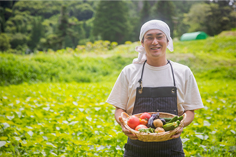
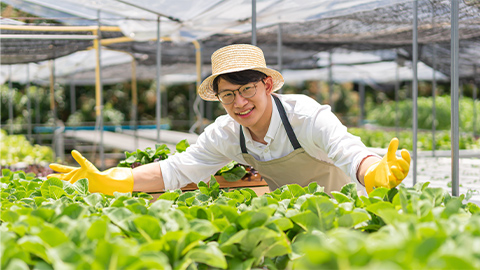

こだわり農家の朝どり
オーガニック野菜をご自宅で
「スグ食べ」とは？
最短で24時間以内に届く
新鮮なオーガニック野菜宅配サービスです。
スグ食べが選ばれる３つの理由

実はまだこんなに少ない、
日本のオーガニック農家
「オーガニック農家は、
国内全体の約0.5%」
最近はレストランなどでもよく目にするのでもっとたくさんあるかと思いきや、実はオーガニック農家は国内農家の0.5％しか存在していません。
でもその0.5％のオーガニック農家は、健やかな野菜を安心して食べてもらいたいという強い気持ちで大切に野菜を作っています。
スグ食べでは、そんな農家さんを厳選し、出品していただいています。
農家さんによって栽培方法も違います。
自分や家族の体を作る礎となる野菜の栽培方法、この際把握してみては？
スグ食べの品質保証
商品に不備があった際には、
スグ食べが “全額” 返金対応します
スグ食べに出品している農家さんたちは、
「大切に育てた自慢の農作物を、できるだけ美味しい状態で食べてもらいたい。」 そんな想いを持った農家さんばかりです。そのため、収穫から梱包・出荷にいたるまでしっかりと品質管理されています。とはいえ、実物を見ずに野菜や果物を購入するのはちょっと不安...そんな方にも安心してご購入いただけるよう、スグ食べでは品質保証をお約束しています。万が一届いた商品に不備があった際には、スグ食べにて全額返金対応いたします。
おかげさまで感謝のお声をいただいています
食べてわかった、この違い。
-
神奈川県 A様
香りまでおいしい、新鮮さ
箱を開けた途端に広がった野菜の香り。 スーパーで買った野菜とはどうしてこんなに違いがあるのかとびっくりするほど豊かな大地の香りです。 葉っぱまでシャキシャキのにんじんは特に子供がお気に入り。 ゆでただけでも、野菜の甘みが優しく広がり、本来の味がたのしめます。
-
千葉県県 O様
安心できる品質に大満足
無農薬・無化学肥料にこだわった生産者から送られてくるため、とても安心して毎日食卓に出せるのがうれしいです。 小さな子供や働き盛りの夫など、健康に気を遣って食から体づくりをしたい我が家には、もう手放せない野菜となっています
-
東京都 M様
旬の野菜が食べられる豊かさ
鮮度にこだわる「スグ食べ」だからこそ、旬になった野菜を「今だ！」と送ってきてくれるので、食卓に並ぶ野菜は常に旬の食材です。 一カ所の農家さんからではなく複数の農家から選べるので、地域によっての旬の違いも楽しめます。 たまに、スーパーに並ばないような珍しい野菜がまざるのも、わくわくしますね。
こんな農家さんが登録しています
私たちの野菜、
こんなにおいしいんです
- 
ひだまり農場（岡山県）山田洋一
安心安全なお野菜を、ご堪能ください
「ひだまり農場」では栽培期間中に農薬・化学肥料を一切使用せず、年間約100種類の野菜と米、卵を生産しています。堆肥・肥料もすべて手作りし、有機質のものを使用しています。
- 
爽緑農園（福井県） 太田紘一
旬なお野菜を存分に楽しんでください
「爽緑農園」では農薬や除草剤は一切使用せず、一つ一つのお野菜を丁寧に栽培しています。お日様の光をたくさん浴びて育ったお野菜は、葉や皮まで余すことなく食べることができます。
よくある質問
-
Q.
産地直送のサービスって
よく見るけど何が違うの？A.
鮮度が抜群に違います。
通常の産直サービスは、一度倉庫などに野菜を集め、そこで箱詰め作業をして配送しています。この仕組みでは、お客様が商品を受け取る時には収穫してから3,4日が経過しています。スグ食べでは、箱詰め作業を農家さんにお願いすることにより、最短で収穫当日に商品を受け取ることができます。
-
Q.
どんな農家さんが登録してるの？
A.
無農薬にこだわる、オーガニック農家さんのみが登録しています。
有機栽培や自然栽培などの環境に配慮した農法で生産するには、通常以上に費用も手間もかかります。そんな中でも、「安心な野菜を食べて欲しい」という強い思いを持って、こだわって野菜を作っている農家さんがいます。 そういった、厳選されたオーガニック農家さんのみが登録しているため、安心してお買い物を楽しんでいただけます。